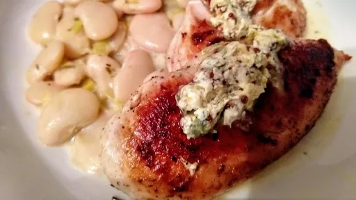

Pan-fried chicken with creamy beans & leeks

A great supper dish, which is simple and quick, and makes a nice substantial meal with the beans and leeks.
Servings: 4
Total: 55 mins
Ingredients
- 4 boneless chicken breasts
- 25 g butter
- 1 tbsp extra virgin olive oil
- 4 rounds mustard and tarragon butter
- sea salt and freshly ground black pepper
- 50 g butter
- 2 leeks, finely chopped
- 1 clove garlic
- 2 tsp chopped fresh rosemary
- 800 g tinned flageolet beans, drained and rinsed
- 300 ml vegetable stock
- 4 tbsp double cream
- watercress salad, to serve
Instructions
- To make the
mustard and tarragon butter4 rounds
, mix 2 tbsp of chopped fresh tarragon with 125 g soften butter25 g
and 1 tbsp wholegrain mustard. Roll, wrap in cling film and freeze. To serve, slice of rounds as required.
- To cook the
beans800 g
and leeks2
, melt the 50 g butter25 g
in a saucepan, add the leeks2
, garlic1 clove
and rosemary2 tsp
and fry gently for 5 minutes until softened but not golden. Add the beans800 g
, stir once, then pour in the stock. Bring to the boil, cover and simmer for 15 minutes
- Remove the lid, stir in the
cream4 tbsp
, add salt and pepper to taste, then simmer, uncovered, for a further 5 minutes until the sauce has thickened. Set aside while you prepare the chicken4
.
- Season the chick with salt and pepper. Heat the 25 g
butter25 g
and oil1 tbsp
in a frying pan and as soon as the butter25 g
stops foaming, cook the chicken4
skin-side down for 4 minutes, turn over and cook for a further 4 minutes.
- Top each breast with a couple of slices of the
mustard and tarragon butter4 rounds
and leave to rest for 2-3 minutes in a warm oven. Serve with the beans800 g
and a simple watercress salad.
Easy Comfort Food
Short Link
Long Link